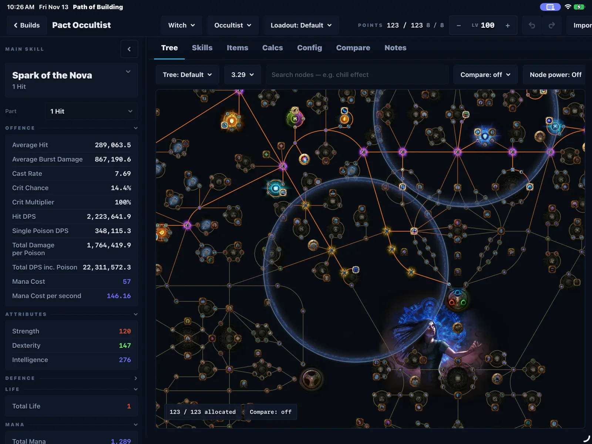
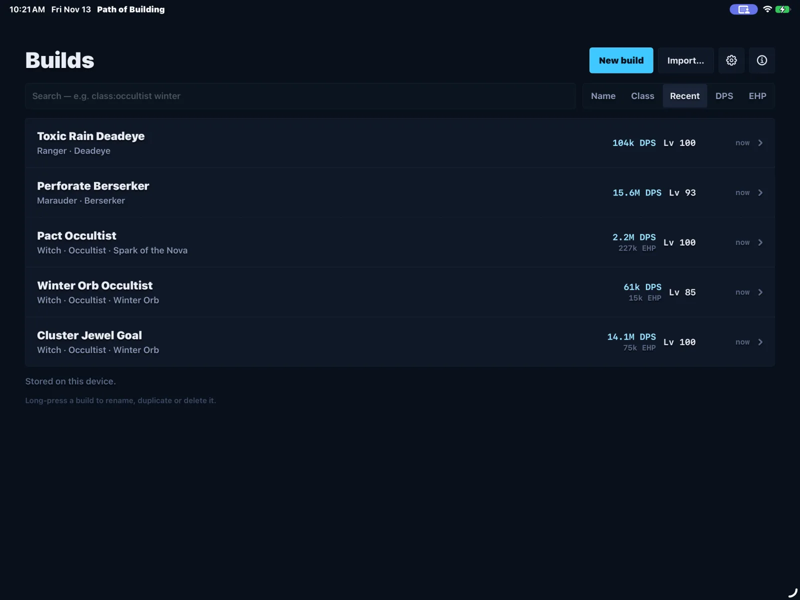
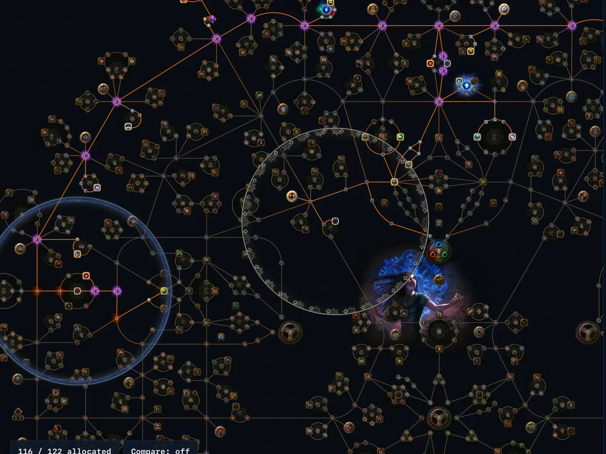
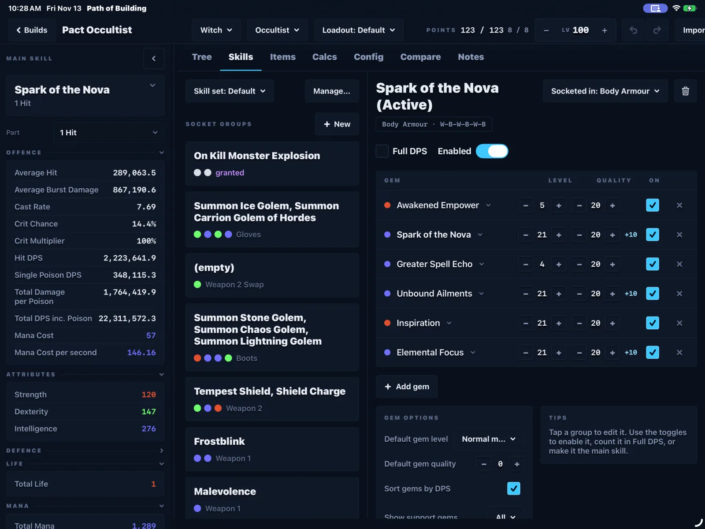
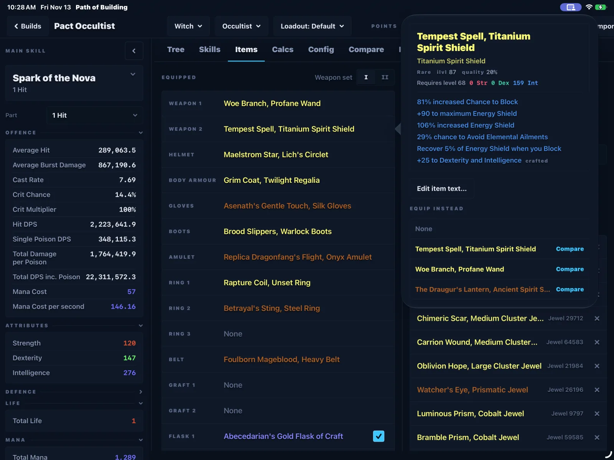
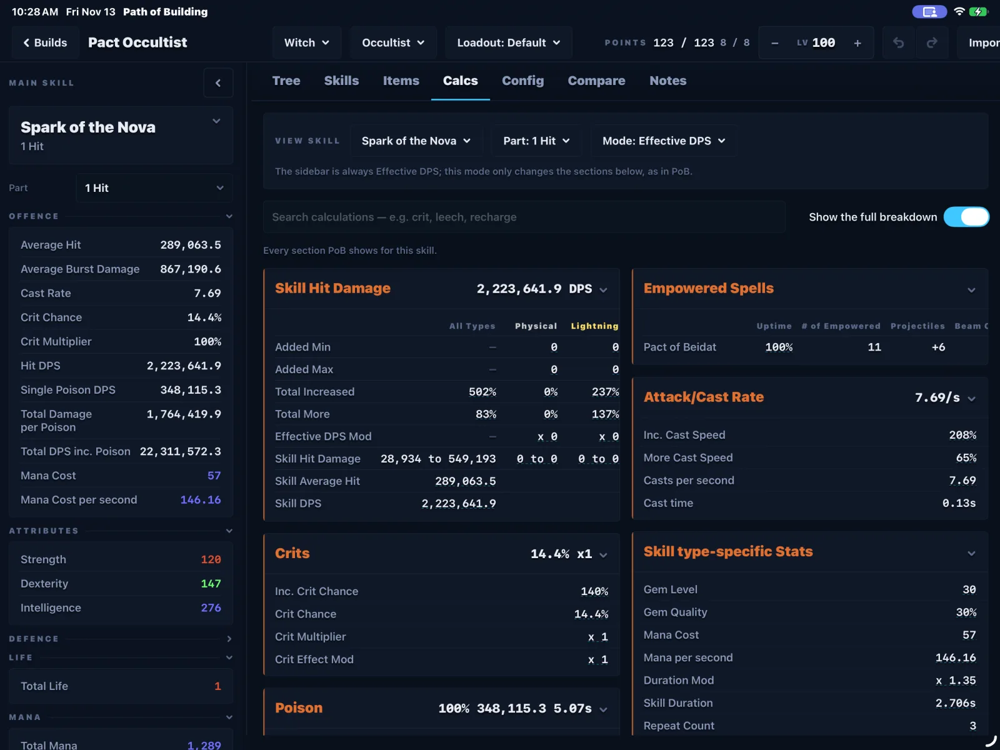
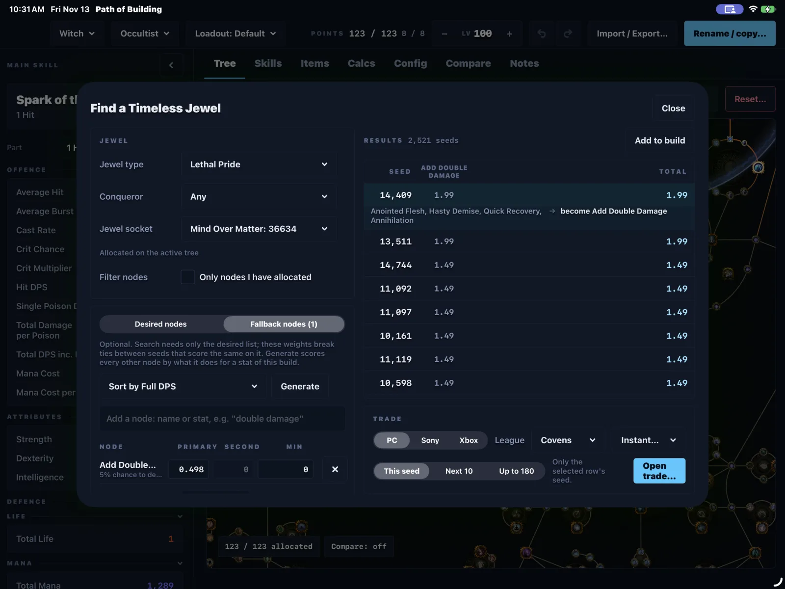

Path of Building · iPad · Free & open source
Not a port of the math. The math itself: pobios runs Path of Building's own calculation engine, so every number matches desktop PoB. Around it, an interface built for touch and a passive tree drawn on Metal.

Paste a pobb.in link or a share code, or import straight from your Path of Exile account. Then plan the way you would at your desk, from the couch.
Every build with its DPS, EHP and level on the card. Sort by any of them, search by class or skill, keep snapshots before big changes.

Pinch, pan and tap to allocate. The tree is drawn on Metal from the game's own art, with PoB's path planning, search and jewel radii.

Socket groups, supports and gem levels, with PoB's own ranking of which support would add the most damage to the skill you are editing.

Craft and compare gear, then ask PoB's weighted trade search for the best upgrade to any slot. The link it opens is the one PoB builds.

The full calculation breakdown, with the sources behind each stat, exactly as PoB computes them.

PoB's timeless jewel finder runs on the iPad, seed tables and all, and hands you a trade search for the seeds it ranks highest.

Rewriting Path of Building's calculations would mean chasing it every league. pobios embeds the real thing instead, and its tests check the results against the stats desktop PoB records.
Engine
PoB's own Lua, running on LuaJIT inside the app. A new league is a PoB update, not a rewrite.
Offline
Plans without signal. Builds live on the device; trade and imports reach out only when you ask.
Both games
Path of Exile 1 and 2, each on its own Path of Building, as separate apps.
pobios is a fan project, free to use and open source. If it earns a place on your iPad, sponsoring keeps it moving each league.